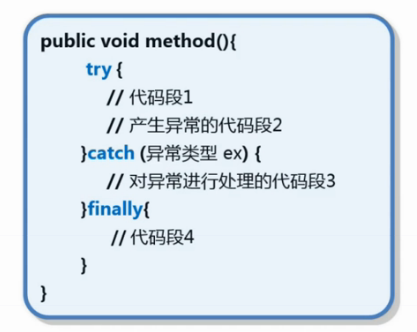

java中通过5个关键字处理异常
一. try-catch-finally

try：捕获异常
catch：对异常进行处理
finally：无论是否发生异常，finally中的代码总能执行。多为释放占用的资源，关闭文件流，数据库连接等。
try块后可接零个或多个catch块，如果没有catch块，则必须跟一个finally块。--try必须和catch或finally组合使用
1. try-catch案例：
try {
int one=3,two=0;
System.out.println(one/two);
}catch (Exception e){
// 打印错误的堆栈信息，建议不只是打印堆栈中的异常位置，可以处理异常
e.printStackTrace();
}finally {
System.out.println("=====运算结束=====");
}
2. 多重try-catch案例：
public static void test(){
try {
int one=3,two=0;
System.out.println(one/two);
} catch (ArithmeticException e) {
// 打印错误的堆栈信息
e.printStackTrace();
System.out.println("除数不能为0");
} catch (InputMismatchException e) {
// 打印错误的堆栈信息
e.printStackTrace();
System.out.println("必须输入数字");
} catch (Exception e){
// 用父类来兜底其他意料之外的异常
e.printStackTrace();
System.out.println("其他错误");
}finally {
System.out.println("=====运算结束=====");
}
}
3. return和System.exit(1)的区别
return和System.exit()都表示退出程序。
前者退出后将数据带回到方法被调用处，后者不行。
前者不会终止finally中的语句，后者会强制终结finally中的语句。
System.exit(0)表示正常退出，System.exit(1)表示非正常退出，异常中的退出都是System.exit(1).
另外，finally中的return会屏蔽catch中的return，故不建议在finally中写return。